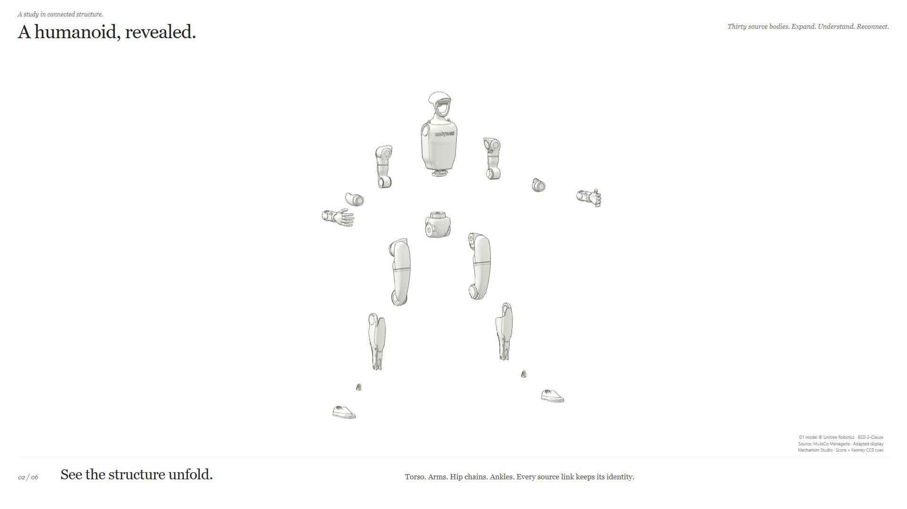
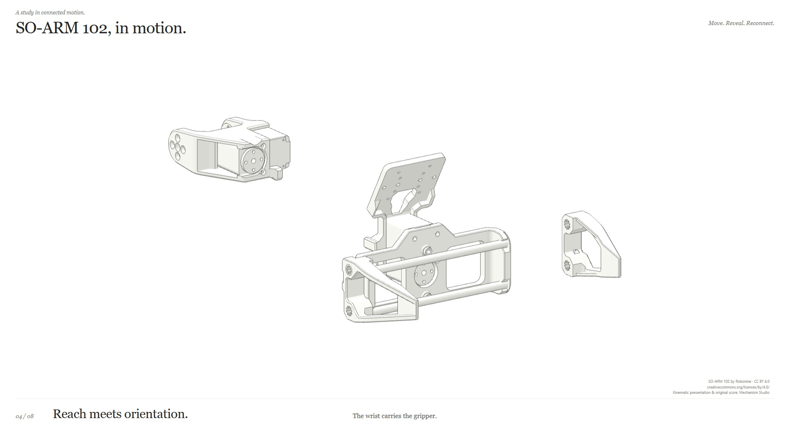
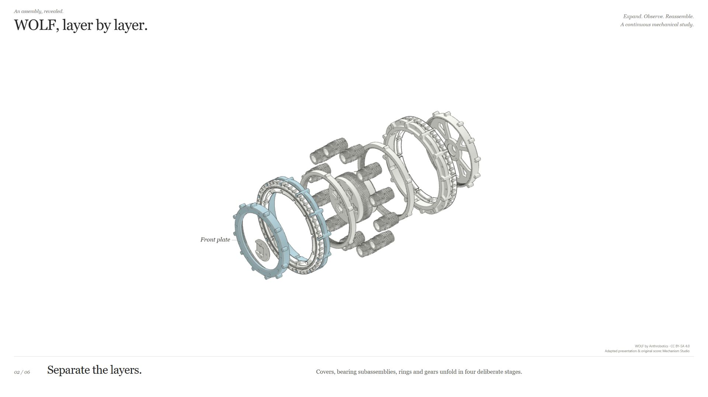
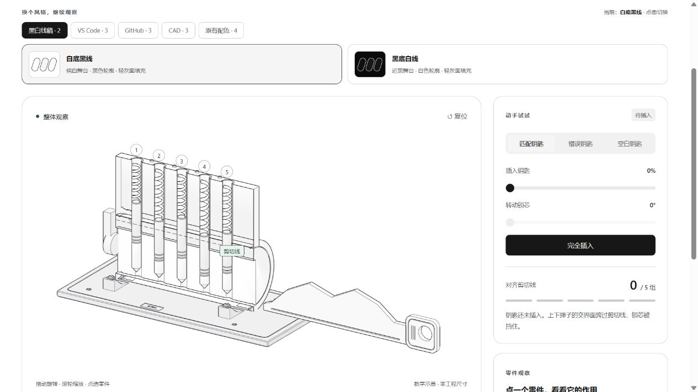
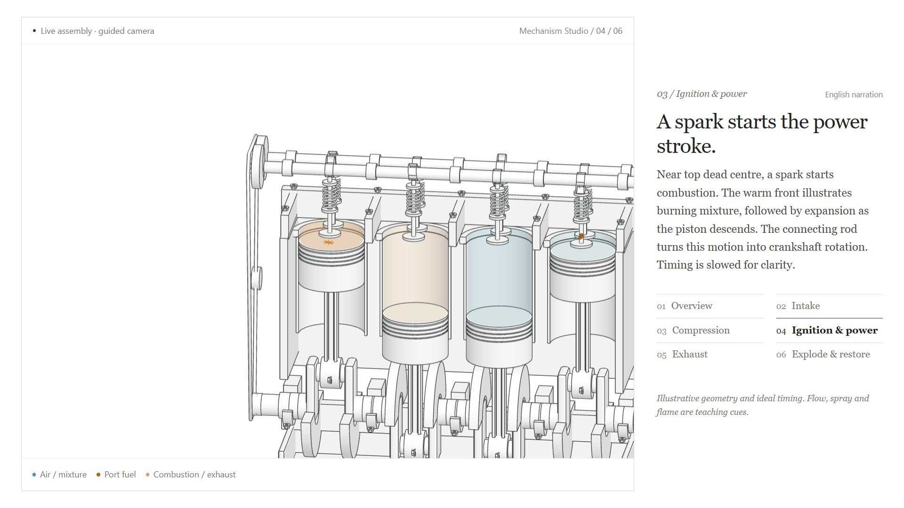
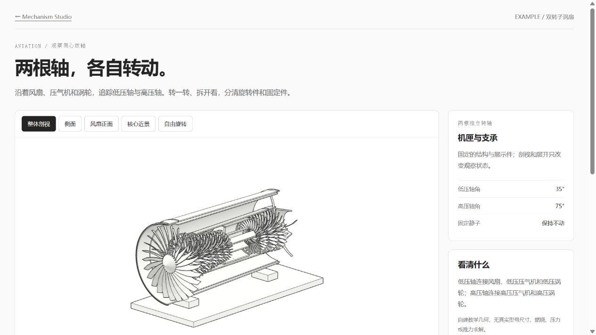
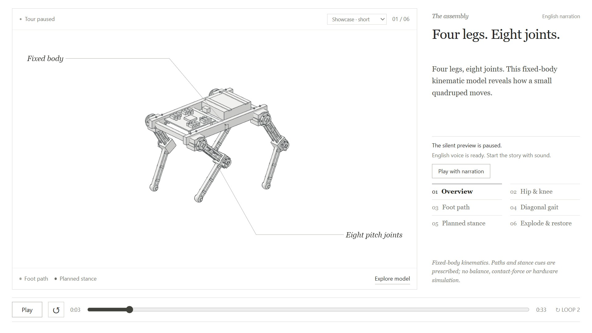
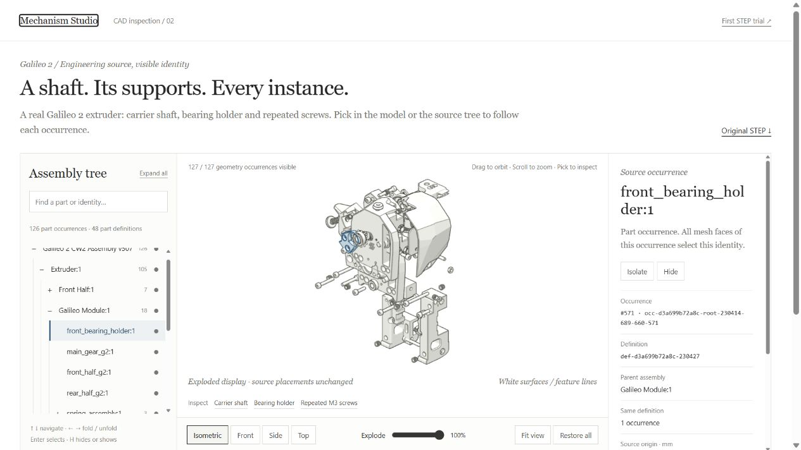
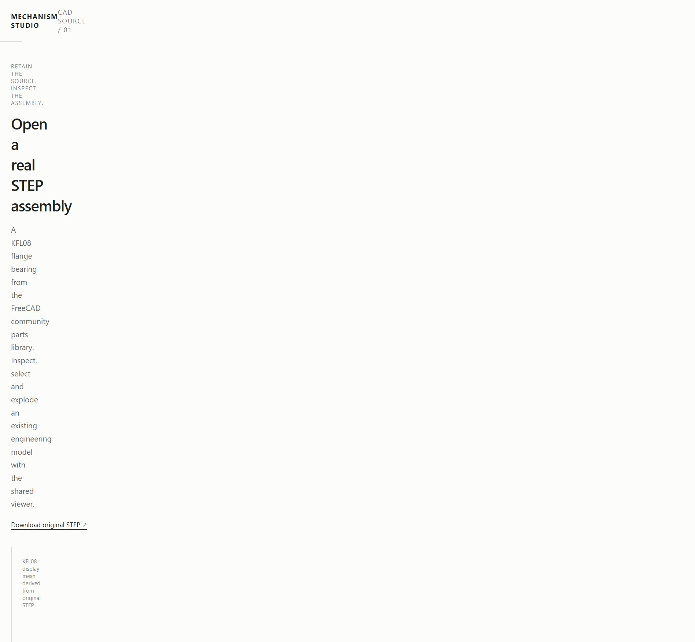

Explore working teaching models, source-based robot studies and real STEP assemblies. Every card points to an implementation; its notes distinguish an authored illustration from verified source identity.
SOURCE HUMANOID / UNITREE G1 · 35.56 S 
Thirty source bodies unfold in ordered groups. Read the arm and leg chains close up, then restore the source assembly with gentle original music and sparse Kenney CC0 cues.
30 source bodies / 35 visuals · BSD-3-Clause: Unitree Robotics · Static source pose, no actuator internals node examples/humanoid/serve.mjsSOURCE ROBOT / SO-ARM 102 · 25.7 S 
A source-backed reach, wrist and gripper sequence, then an exploded view and restoration. One timeline drives motion, near-part labels and original code music.
URDF kinematics · CC BY 4.0 model: Robonine · No dynamics/control validation node EXAMPLE_ROBOT/serve.mjsSOURCE ASSEMBLY / WOLF · 34.3 S 
A real STEP-derived actuator with 245 leaf occurrences. Choose the whole study or inspect its actual 86-leaf motor: source magnets, unspecified “cc” pieces and six named hardware parts, then restore.
Real STEP-derived geometry · CC BY-SA 4.0: Anthrobotics · Observation separation node examples/wolf-actuator/serve.mjsTEACHING MODEL / PIN TUMBLER LOCK 
Compare key profiles, align five pin pairs, and watch the shear line release the plug. Change view, open a cutaway, or separate the teaching assembly.
24 semantic parts · Key controls · Idealized geometry TEACHING MODEL / INLINE-FOUR 
Follow the crankshaft, connecting rods, pistons and cams. Inspect valve timing, port injection and ignition cues through a four-stroke cycle.
46 semantic parts · Prescribed kinematics · Qualitative process effects TEACHING MODEL / TWO-SPOOL TURBOFAN 
Trace concentric shafts, separate rotors from stators, and compare core and bypass flow. Independent spool controls expose the architecture.
34 semantic parts · Two shafts · No thermodynamic/CFD solver TEACHING MODEL / EIGHT-DOF QUADRUPED 
Set foot targets, solve joint angles, then compare a single-leg lift and a diagonal gait. Explode the body and legs independently of working motion.
20 semantic parts · Geometric FK/IK · No balance/contact solver SOURCE IDENTITY / GALILEO 2 
Pick a shaft, bearing holder or repeated screw in the tree or model. Shared definitions retain separate occurrences, parents and real source placements.
69 definitions · 147 root-inclusive occurrences · GPL v3 source and derivatives HISTORICAL CAD TRIAL / KFL08 
Retained engineering source and derived display meshes from a parts-library bearing. Mapping limitations are recorded explicitly; use Galileo for stronger identity inspection.
22 source leaves / 35 display fragments · CC BY 3.0: hasecilu · Partial mapping SOURCE ROBOT / SO-ARM 102 · ORIGINAL 34.3 S STUDY The earlier music-led assembly edition remains intact alongside the kinetic cut. Eight source links separate in ordered groups, names stay near their parts, and one media clock returns the display to its rest state.
Selected simulation source · CC BY 4.0: Robonine · Grouped display explosion node EXAMPLE_ROBOT/serve.mjs
Ten implemented experiences include display GLBs, provenance, source builders and code-generated music; the humanoid adds five CC0 effects. Optional service-generated narration, local Blender scene binaries, captured frames and MP4 deliveries are excluded from Git; text and silent viewing remain usable. Why some source folders looked empty ↗